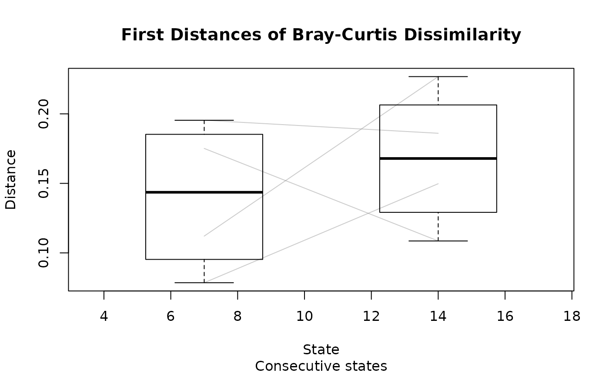

For repeated measures: how far each subject's community moves from one
time point (state) to the next, or from a baseline: the distance between
the subject's two samples, from a distance matrix. The same as
q2-longitudinal's first-distances action. Typical uses are the rate of
change of each subject's community (consecutive states), and how far it
is from its baseline (with baseline, such as recovery after
antibiotics).
Usage
first_distances(
dm,
subjects,
states,
data = NULL,
baseline = NULL,
replicates = "error",
seed = 0L
)Arguments
- dm
A distance matrix over samples: a
distobject, such as frombeta_div()orbray(), or a symmetric numeric matrix. Its sample names are matched todata's row names and to the names ofsubjectsandstates.- subjects
The subject (individual) of each sample: one value per sample, matched to the samples by name when both are named, else in the samples' order; or, with
data, the name of one of its columns (q2'sindividual_id_column). NoNAs.- states
The time point of each sample, as a number (days, weeks, or visit numbers): given as
subjectsis (q2'sstate_column). At least two distinct values; noNAs.- data
Optional sample metadata: a data frame with one row per sample, holding the columns named in
subjectsandstates. Rows are matched to the samples indmby row name, and rows for other samples are ignored; without row names, they must be in the same order asdm. Default:NULL.- baseline
NULL(the default) for first differences, between consecutive states. Or one of the states: then each state is compared with it instead (static differences, such as changes from before a treatment).- replicates
What to do when a subject has more than one sample at a state (q2's
replicate_handling):'error'(the default),'drop'(that subject is left out of the pairs that involve the state) or'random'(one of them is picked at random, withseed).- seed
An integer seed for
replicates = 'random'. Default:0.
Value
A data frame of class c("ecodive_first_distances", "data.frame"), one row per pair of samples, ordered by pair of states
and then by subject, with columns sample (the later sample), subject,
state_from, state and distance. With baseline, attribute
baseline holds it. Its title (see ecodive_display) is "First
Distances of" and the title of dm. plot() draws the distances
against the state.
Details
The pairs of samples are those of first_differences() (see its
Pairs of samples). Distances are read from the packed triangle of
dm, without forming the full matrix.
Differences from q2-longitudinal: those of first_differences(),
and q2 reads the states from every row of its metadata, even samples
that are not in the distance matrix (whose pairs it then skips); ecodive
takes them from the samples of dm alone.
References
Bokulich, N. A., Dillon, M. R., Zhang, Y., Rideout, J. R., Bolyen, E., Li, H., Albert, P. S., & Caporaso, J. G. (2018). q2-longitudinal: longitudinal and paired-sample analyses of microbiome data. mSystems, 3, e00219-18. doi:10.1128/mSystems.00219-18
See also
Other longitudinal:
first_differences(),
nmit(),
volatility()
Examples
meta <- data.frame(
subject = rep(c('a', 'b', 'c', 'd'), each = 3),
day = rep(c(0, 7, 14), 4),
row.names = sprintf('s%02d', 1:12) )
counts <- matrix(rpois(12 * 5, 20), 12, dimnames = list(rownames(meta), letters[1:5]))
fd <- first_distances(bray(counts), 'subject', 'day', meta)
fd
#> # A data.frame: 8 × 5
#> # First Distances of Bray-Curtis Dissimilarity
#> sample subject state_from state distance
#> <chr> <chr> <dbl> <dbl> <dbl>
#> 1 s02 a 0 7 0.112
#> 2 s05 b 0 7 0.0785
#> 3 s08 c 0 7 0.175
#> 4 s11 d 0 7 0.195
#> 5 s03 a 7 14 0.227
#> 6 s06 b 7 14 0.15
#> 7 s09 c 7 14 0.109
#> 8 s12 d 7 14 0.186
plot(fd)

# Distance from day 0.
first_distances(bray(counts), 'subject', 'day', meta, baseline = 0)
#> # A data.frame: 8 × 5
#> # First Distances of Bray-Curtis Dissimilarity
#> sample subject state_from state distance
#> <chr> <chr> <dbl> <dbl> <dbl>
#> 1 s02 a 0 7 0.112
#> 2 s05 b 0 7 0.0785
#> 3 s08 c 0 7 0.175
#> 4 s11 d 0 7 0.195
#> 5 s03 a 0 14 0.19
#> 6 s06 b 0 14 0.163
#> 7 s09 c 0 14 0.146
#> 8 s12 d 0 14 0.136
#> # Attributes: baseline